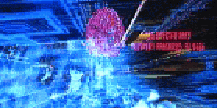

Définitions Cyberpunk
This is a good comment from Thomas Eicher, about defining cyberpunk :
Gibson said it in a short story somewhere. Cyberpunk is the stuff that has EDGE written all over it. You know, not edge, it's written EDGE. All capital letters. Now ask me how I'd define EDGE. Well, EDGE is not about definitions. To the contrary, things so well known that they provide an exact definition can't be EDGE. They probably once were but now they ain't. SO DON'T TRY TO DEFINE IT !!!
Cyberpunk really is The Undefinable. One cannot give it an exact meaning. Cyberpunk is personal. Anyway, there's some meaning, and yes, really many meanings, for cyberpunk, what it is, and what it should be. Here is the definition used on this site.
Definition of Cyberpunk
- Dictionary and FAQ Definitions for Cyberpunk
- Cyberpunk Understood
- A letter from The Cyberpunk Project
- Cyberpunk - Aspects and Expectations
- Time Has Come Today
- A modern days explanation.
- What is Cyberpunk ?
Mainstream Cyberpunk
Cyberpunk is also a pop culture phenomenon, but we exclude it here as a wannabee fuss. No one really calls themself a cyberpunk in that meaning anymore, because it sounds stupid and invites people to spit on you because you are a trendy out-of-it loser.
More about this mainstream cyberpunk phenomenon and about cyberpunk in public media :
- The Confusion Over Cyberpunk
- What the media associates with cyberpunk does not agree with the commonly accepted interpretation of the movement.
- Mainstreaming Cyberpunk
- Short cyberpunk history and definitions, and how cyberpunk was mainstreamed by Billy Idols, from book Escape Velocity - Cyberculture at the End of the Century.
Cyberpunk as a Social Theory
Cyberpunk can be seen also as a social theory about postmodern, post-industrial world. As a social theory cyberpunk tries to explain our present-day world from its own viewpoints - technology, cynicism, social darwinism...
- Defining Postmodernism
- Cyberpunk as Social and Political Theory
- The relationship between cyberpunk and sociology.
- Social Darwinism in Cyberpunk
- I think I'm dying...
- Technoculture : Another, More Material, Name for Postmodern Culture ?
- "Cyberpunks" to Synners : Toward a Feminist Posthumanism ?
- About position of cyberpunk within the matrix of postmodern cultural change, from a viewpoint of feminist posthumanism.
- Postmodern Blackness
- About postmodern culture from African-American viewpoint.
- Cyberpunk Cinderella ?
- Contextual illness and subjectivation. A weird example of cyberpunk as a social theory - classic Cinderella from cyberpunk viewpoint.
- Attribution of Affect in Mona Lisa Overdrive
- Cyborg Cynicism ?
- Beyond CYB, Beyond ORG, Beyond NEURO, Beyond EVOLVERA
- An Intimate Encounter With an Other
- Postmodernism and the Postmodern Novel
- Gibson's Invisible City
- A thesis on Gibson and Cyberpunk
Other comments on what Cyberpunk is
Other definitions for Cyberpunk by magazines, cyberpunk authors and fellow cyberpunks.
- New alt.cyberpunk FAQ
- La dernière version de la Foire Aux Question du newsgroup alt.cyberpunk.
- Pourquoi Cyberpunk ?
- Une définition parmi d'autre de ce qu'est le Cyberpunk.
- Cyberpunk : Final Solution
- A cyber-dadaistic definitional essay.
- Cyberpunk Cut-and-Paste Manifesto
- A "C-Word" sampler.
- Politics of Cyberpunk
- Cyberpunk in mainstream media.
- A conversation between William Gibson and Bruce Sterling
- Qu'est-ce que le Cyberpunk ?
- Une définition utilisée par le site Cyberpunk Review pour noter les films cyberpunks.
- Qu'est-ce que le Cyberpunk ?
- In May 29, 1993 in the Ottawa Citizen newspaper, they defined cyberpunk as :
- "An emerging youthful sub-culture, fusing punk rock's anti-authoritarianism with a love of cutting-edge technology."
- Extracts from Computer Underground Digest, Issue #3.24, July 3, 1991 :
- "Cyberpunks are characterized by their resistance to oppressive authority (which makes them a form of freedom fighter), but the resistance tends to be highly individualistic. I wonder if cyberpunks might be based on the anti-hero model of westerns (Shane) or earlier science fiction in which the marginal but basically decent outsider steps in to use marginal skills to save the town, country, or civilization ?
The cyberpunks I know are those who, as the word implies, have taken the punk ethic of disrespect for authority (and often for self, even to the point of nihilism) and applied it to the cyber world. Cyberpunks are those who think that the street has its own uses for technology (they're out there decoding the signals from Mattel Powergloves). They think that corporations are often a bigger threat than governments, though they dis both - sometimes to the point of breaking laws. The only freedom these people are interested in is the freedom to be left alone, both physically and, in the data world, to be left out of the ubiquitous info files being accumulated on us all." - Cyberpunk Anarchy. This comment is from John Shirley, cyberpunk science fiction writer :
- In a recent computer-crime scandal, credit for the idea was given to John Brunner's Shockwave Rider. That's very encouraging to me. You could say that cyberpunk intrinsically anarchistic. It's endlessly antiauthoritarian, and it can be employed like a weapon, like a computer virus, injecting new information by means of the existing mechanisms. The pop image of anarchism has always been a bomb - yeah, well, this is an ideological bomb that has been planted in the culture. I just saw a New York Times headline that used the term cyberpunk to describe a computer virus hacker - as if it were already part of the language.
* * *Well, we are back where we started... In conclusion we can say that cyberpunk is undefinable. Maybe you'll find your own way, if you'll one.